The Venice Biennale 2023 is known for its provocative atmosphere, providing a space for architects and artists around the world to exhibit ambitious and creative ideas. This dynamic exhibition nurtures speculative discourse about societal constructs in architecture. Similar to the shifting patterns inside a kaleidoscope, the diverse fragments of ideas still interact with eachother with fluidity, which create a rich tapestry of narratives and voices surrounding architecture. Our approach was to visually represent these themes of fragmentation and fluidity in the art directions
"The Biennale is not a single story, but multiple stories that reflect the vexing kaleidoscope of ideas."
- Lesley Lokko, Curator of Biennale Architettura 2023
Microsite: Content Strategy
The microsite is meant to be a pre-event experience that gives a teaser of all 63 national exhibitions you could see at the Biennale. The decision to showcase all 63 participants was intentional to make it feel like there’s so much to explore, which can be a bit overwhelming but in a good way. The idea is to captivate the visitor after only a few interactions, giving them the freedom and choice to check out exhibitions that give them intrigue, much like wandering through a real exhibit. In our final microsite, I was responsible for majority of the interaction and motion design. I was also responsible for content design, which included sourcing text and video, and treatment of images.
Index Categorized Landing Page
Upon landing, visitors are able to view all 63 national exhibitions through a simple index page in alphabetical order to effectively orgaganize the abundance of content. As the visitor scrolls, introductory information about the Biennale fades away, leaving essential navigation elements fixed at the top of the page.
Unveiling something interesting underneath
To utilize our 3-column grid, I aimed to design a transition microanimtion that visually engages visitors when selecting a pavilion, and stimulate the feeling of looking into a kaleidoscope. Upon clicking, the cell disappears and adjacent cells chip away rhythmically to reveal a new page underneath. This leads the visitor into an immersive parallel scroll experience.
Hover to halt scrolling
Hovering over any of the 3 column disrupts the flow of the grid, allowing visitors to pause and read. By copywriting thought-provoking text and questions related to each exhibit, we can incentivise a visitor to hover, pause and reflect as a way to spark speculative discourse.
Transition back to index
A familiar interaction is used to transition from the parallel scroll content back to the index page. Content that has been previously visited are transformed into coloured cells, providing a functional reminder of what has been viewed. Overtime when a user visits more pavilions, what used to be a plain white index page turns into a colourful page that marks the visitors journey.
Art Direction Process: How did we get here?
To create a visual identity for this exhibition, we started our graphic experimentation process by doing precedent research on Ellen Lupton’s design principles and qualities of Irma Boom’s work - a visionary book designer from the Netherlands. By studying Boom’s work and Lupton’s principles, we created image groupings of these qualities and began to apply these techniques into our own designs.
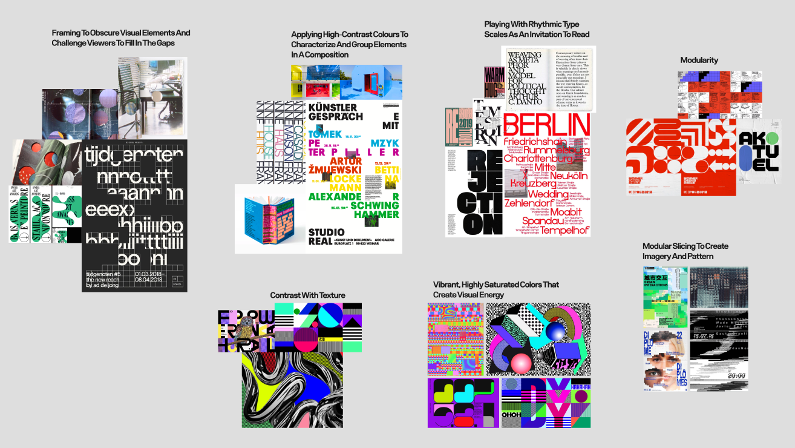
Image grouping of design qualities and principles
Graphic Experimentation
The samples below are work that I designed and art directed for this project
Image Slicing to Create Motion and Inform a Grid + Framing to Disrupt Form
Horizontal slicing of images creates a dynamic sense of motion, guiding the viewer’s eyes and establishing a clear hierarchy in the composition. These sliced lines double as a grid, providing an anchor for other elements, creating a harmonious and coherent aesthetic amidst the distortion. Each slice functions as a discrete frame capturing fragments that when connected, form a more intricate and complex whole to the composition.
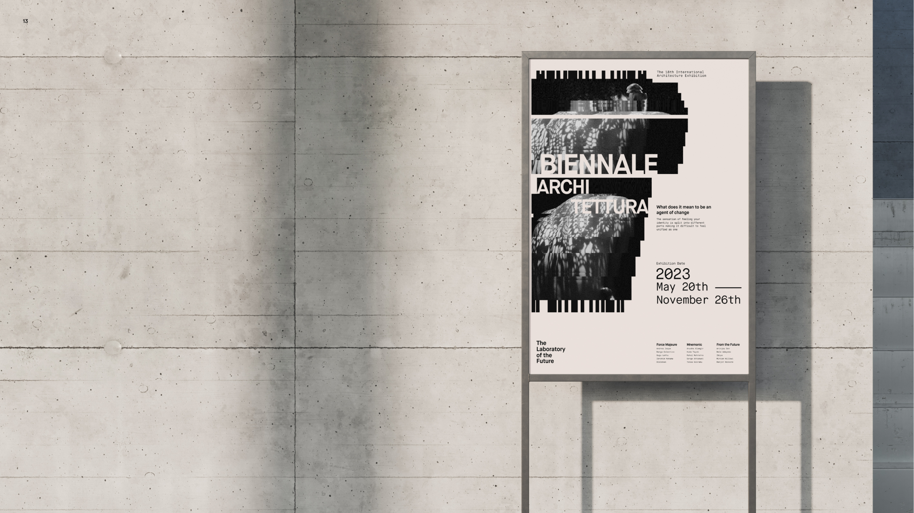
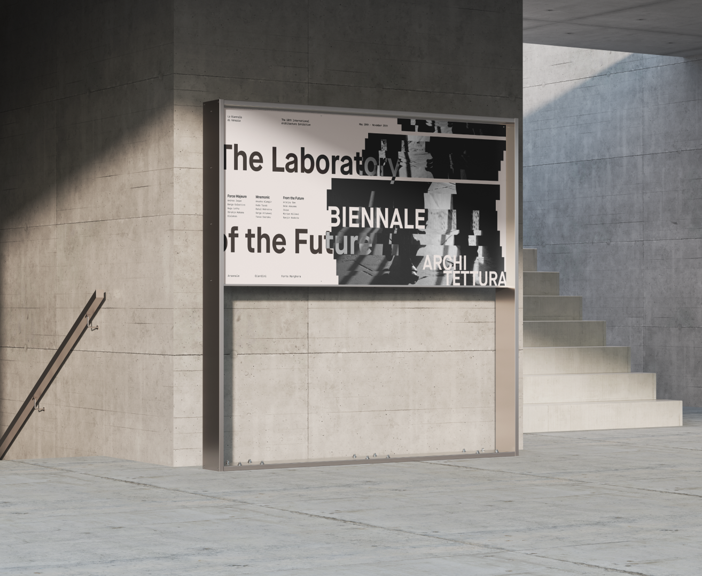
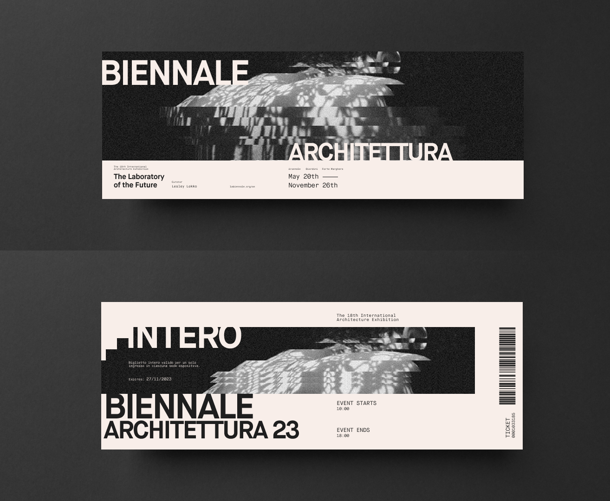
Clusters of geometric shapes to create focal points + Vibrant, High saturation colours that create visual energy
A generative pattern that swarms irregularly, with concentrated areas of intensity, highlights images that are particularly close-ups of human facial features which convey the diverse narratives from people of diverse backgrounds within the Biennale. The overlapping slices form visual hotspots and the use of high saturation colours when laid next to each other create an electrifying effect that adds visual energy to the composition.
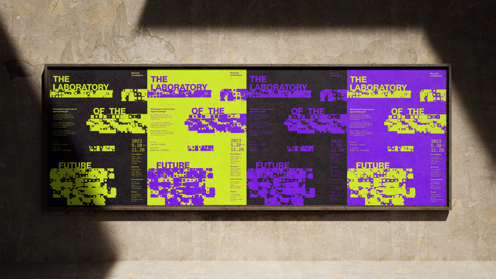
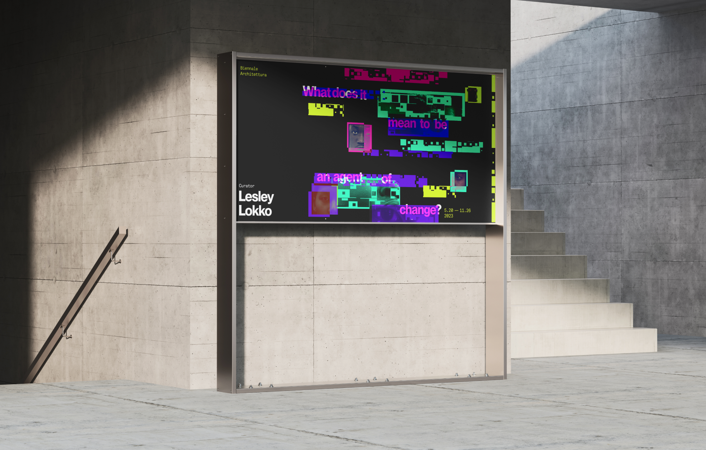
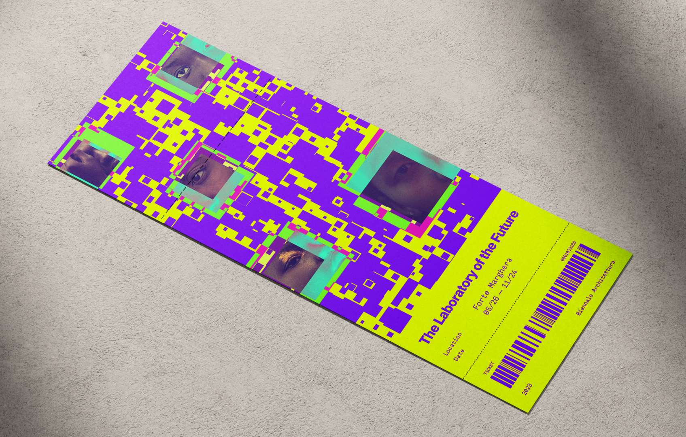
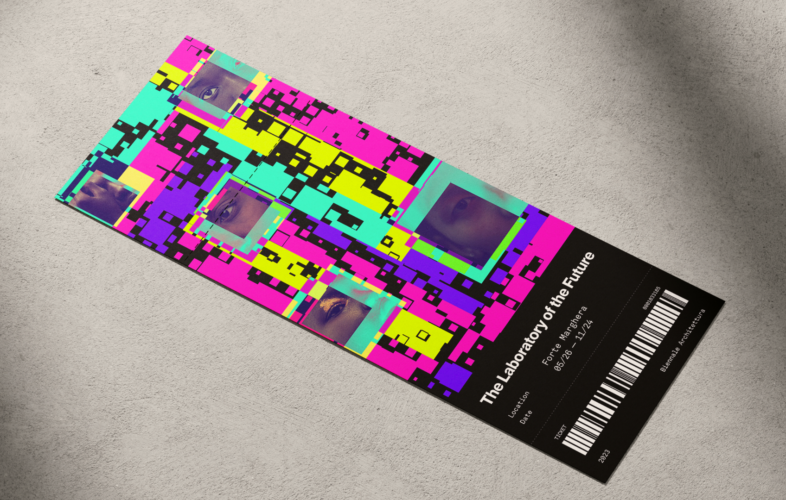
Converging with my team: Modular grid + Contrast with texture + Sharp analogous colours
In collaboration with my other team members, we all converged our ideas into one final line of investigation. The composition makes use of a modular grid to create a visual identity that can be translated into different forms of assets and media. We also make use of different textures - dots, grids, and squares - which communicate the theme of fragmentation when laid next to eachother. The colour palette was chosen to juxtapose the darker themes of this event. The analogous palette consists of the red, purple and pink, while the turquoise serves as an element to use to contrast.
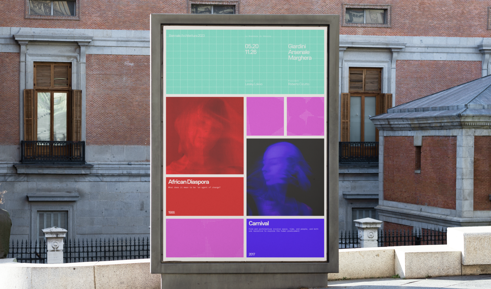
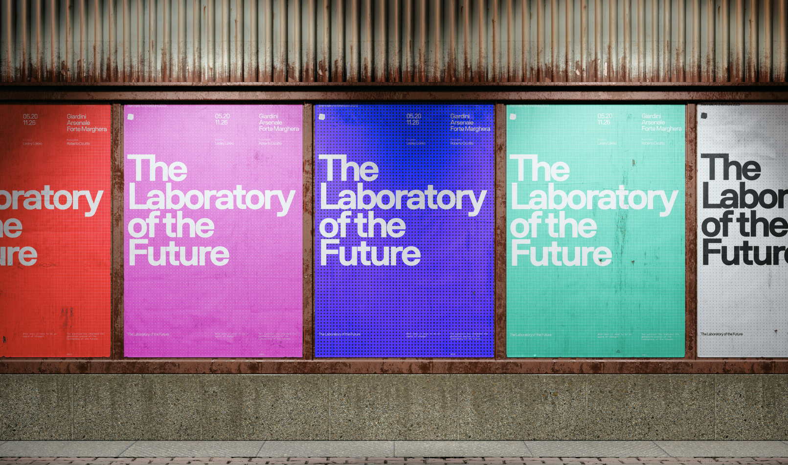
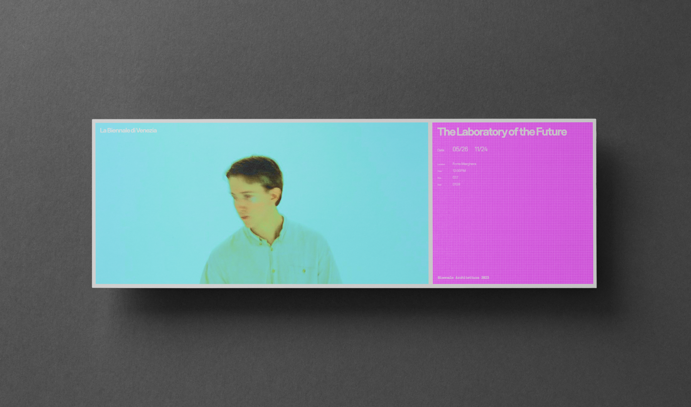
Designing Expressive Interactions
To translate print into digital, I explored different ways to play with interactions to best leverage our graphic qualities of modularity, texture and colour. I contributed to mocking up these interactions in After Effects and Figma to test and figure out ways to incorporate our visual identity in a digital space.
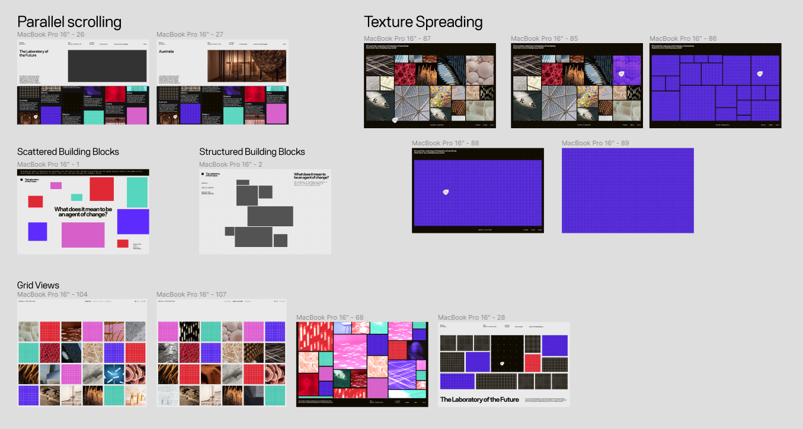
Static mockups of layouts I designed and iterated on
Texture transition swatch I experimented with on After Effects
Hover interaction, animating the border
Using our texture patterns as a way to filter different exhibitions, made in Figma
Reflection
During my early years in this program, I always heard “Don’t design in your head”, but never really understood what that meant until this project. This project taught me the value of doing precedent research and to really dig deep into graphic form and qualities that exist in other designer’s work. I created a lot of posters, and a lot of them were no where near polished. However, rather than throwing them in the trash, I took time to analyze them instead, finding what’s not working, and finding that glimmer that I can iterate on. I was able to elevate my graphic design skills in a span of a few weeks, and I learned the value of doing different experiementations with form that could lead to more interesting results!